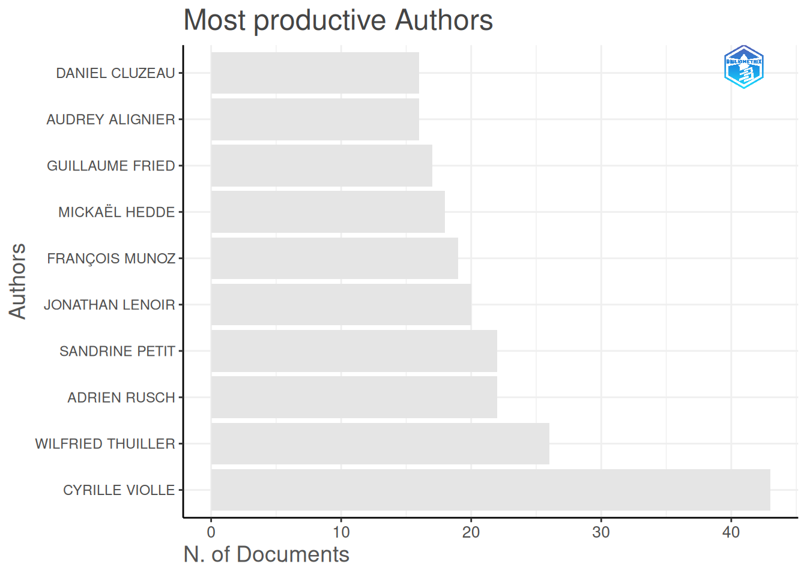
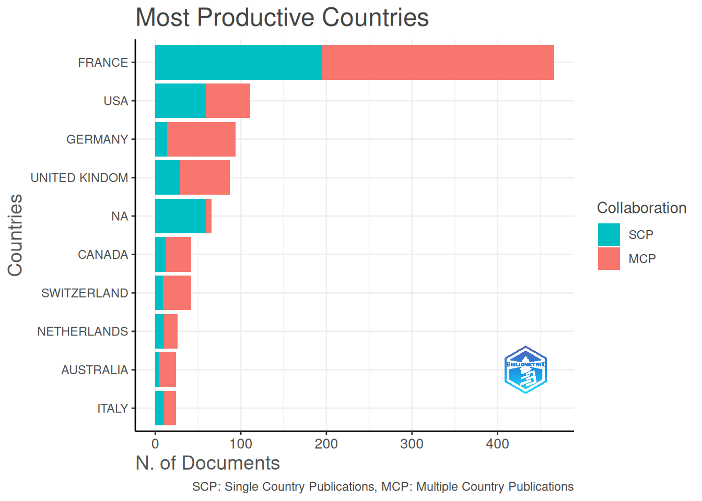
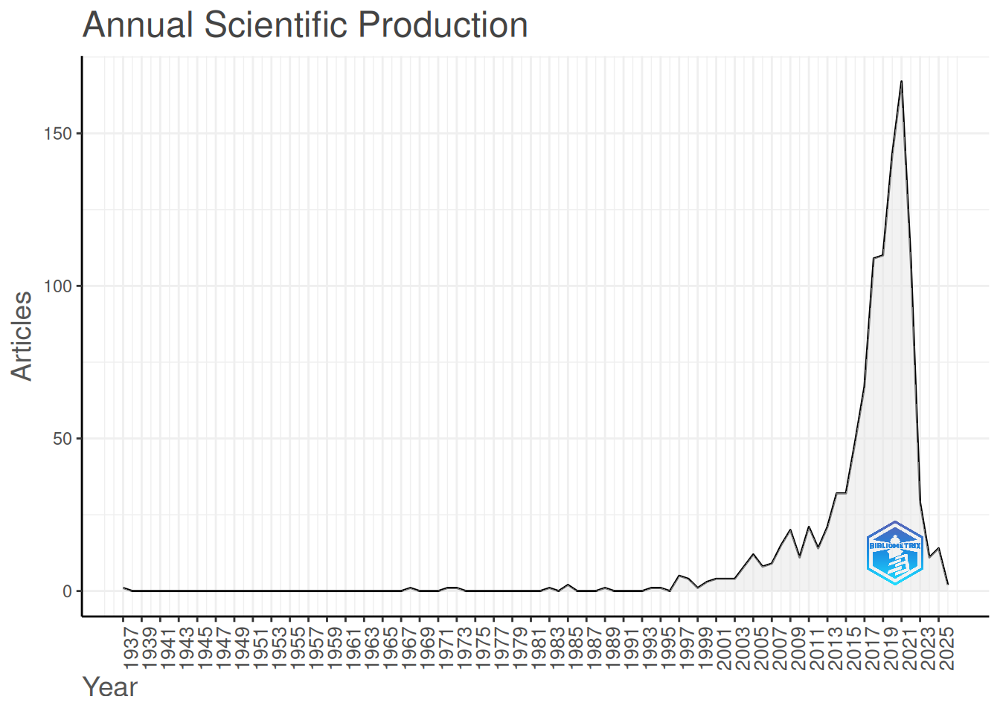
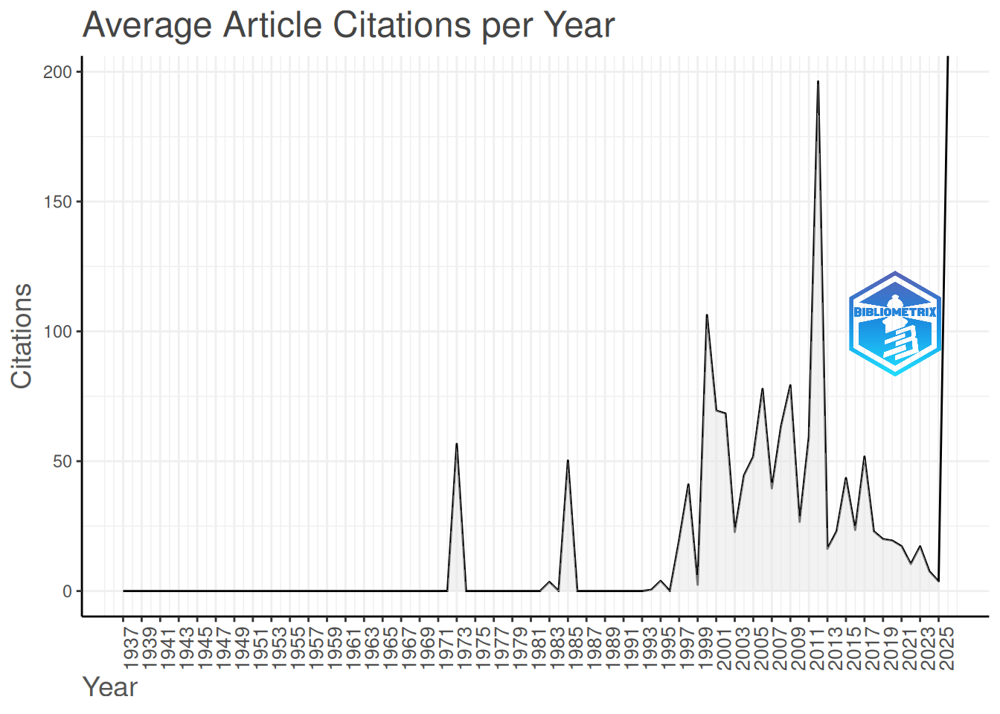
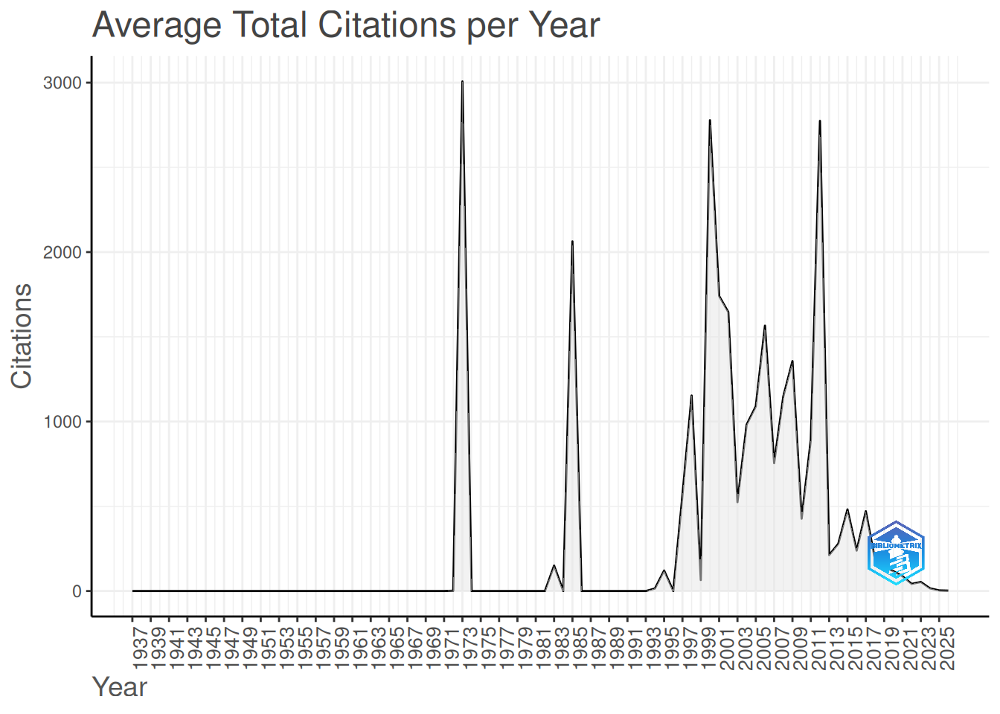
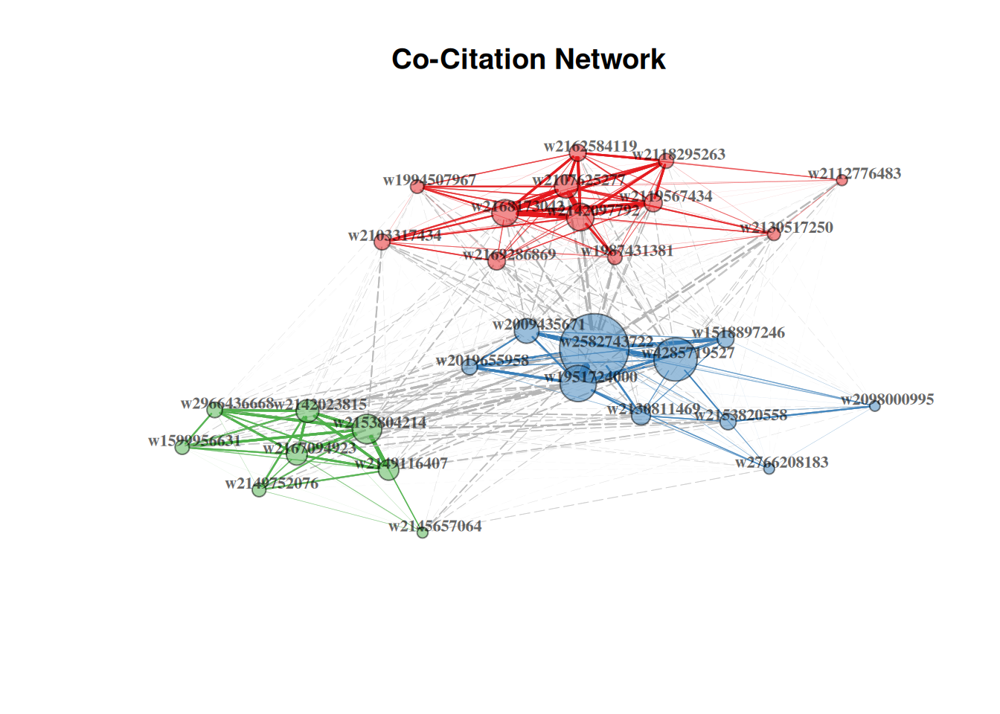
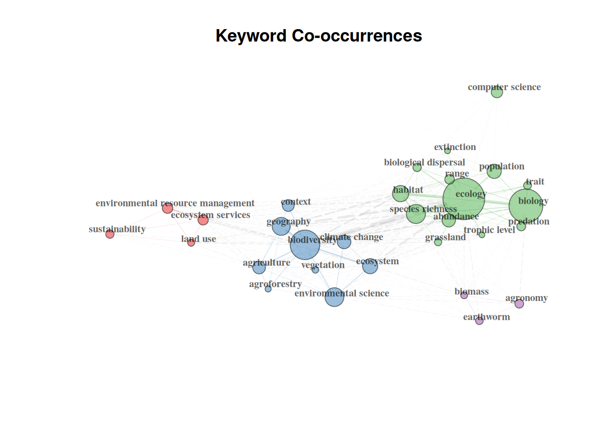
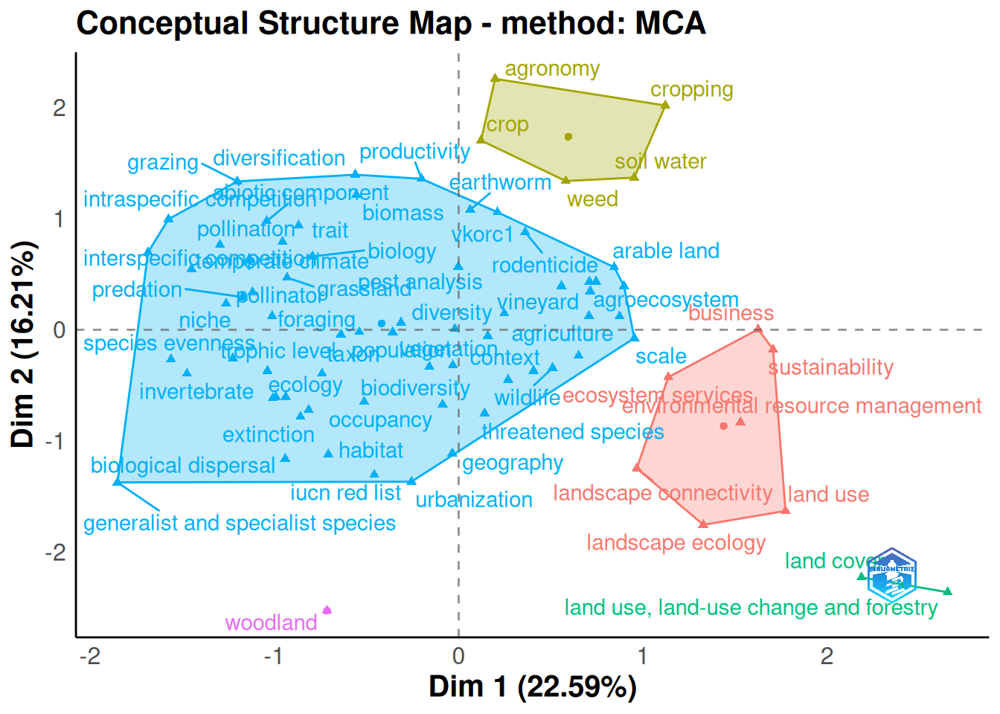
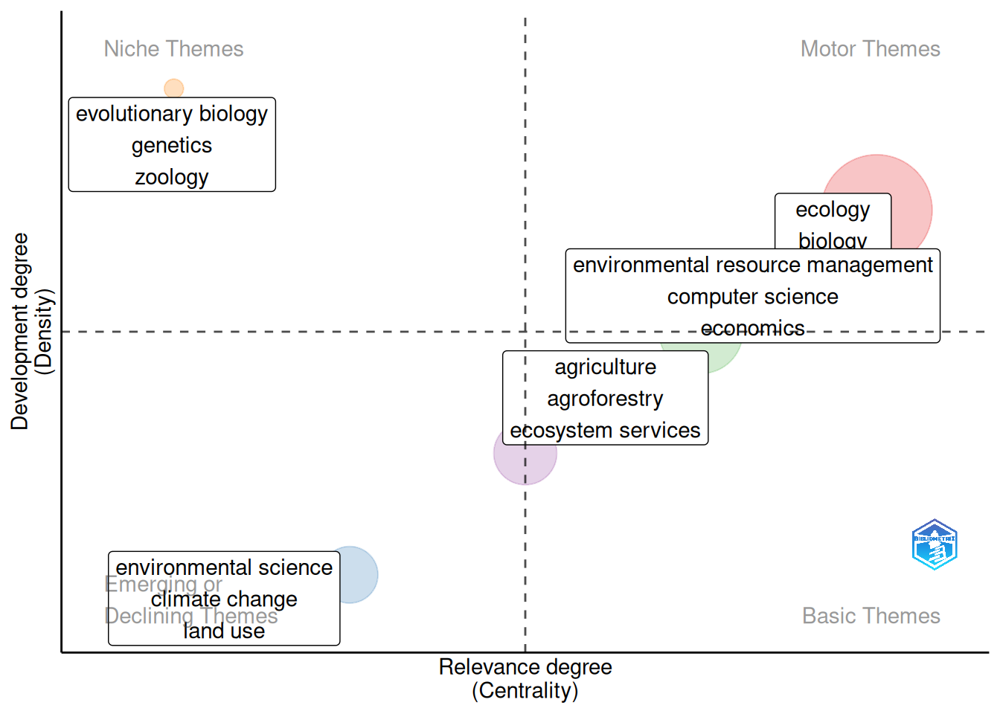
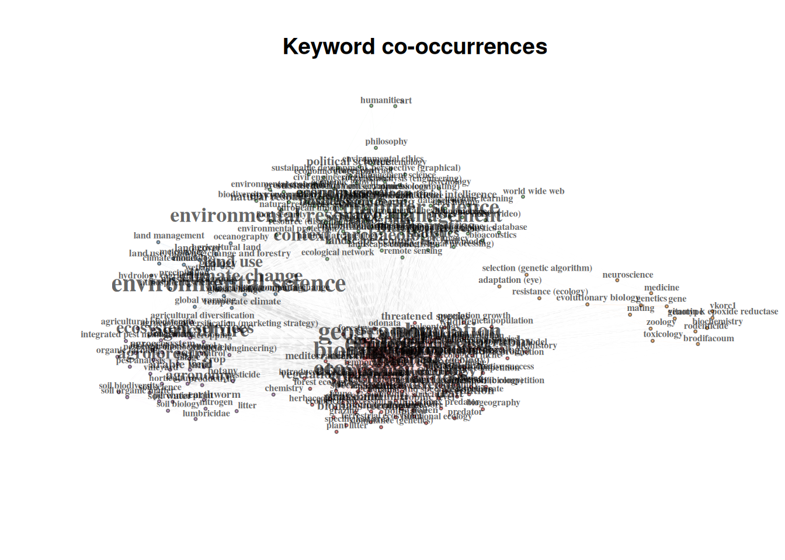

bibliometrix::biblioshiny()Exploration of bibliometrix R package
The objective is to explore the functionalities of the bibliometrix R package.
The example case study is based on the references cited by projects financed under the FRB-MTE-OFB projects. The references were cleaned and completed in the scripts 01_clean_references.R and 02_fetch_openalex.R.
The bibliometrix package has a nice Shiny interface that can be accessed locally with:
The openalex data in can be loaded in the Shinyapp in the section Data > Import raw files > OpenAlexAPI.
But here the objective is to use and explore the functions of bibliometrix package.
Data loading and converting
The data loading takes few minutes to run.
library(bibliometrix)
oadata <- here::here("data", "derived-data", "mte_references_oa.rdata")
M <- bibliometrix::convert2df(
file = oadata,
dbsource = "openalex_api",
format = "api"
)
Converting your openalex_api collection into a bibliographic dataframeDone!
Removed 97 duplicated documentsWe can check the quality of the bibliometric data.
com <- missingData(M)
print(com$mandatoryTags) tag description missing_counts missing_pct status
1 DI DOI 0 0.00 Excellent
2 DT Document Type 0 0.00 Excellent
3 DE Keywords 0 0.00 Excellent
4 LA Language 0 0.00 Excellent
5 PY Publication Year 0 0.00 Excellent
6 TI Title 0 0.00 Excellent
7 TC Total Citation 0 0.00 Excellent
8 AU Author 9 0.86 Good
9 SO Journal 21 2.01 Good
10 ID Keywords Plus 28 2.67 Good
11 RP Corresponding Author 37 3.53 Good
12 CR Cited References 44 4.20 Good
13 C1 Affiliation 48 4.58 Good
14 AB Abstract 343 32.76 Poor
15 WC Science Categories 1047 100.00 Completely missingSimple bibliometric Analysis
A recommended first step is a descriptive analysis of the bibliographic data with the function biblioAnalysis. It calculates:
- Annual scientific production
- Most productive authors
- Most cited manuscripts
- Most productive countries
- Total citations per country
- Most relevant sources (journals)
- Most frequent keywords
results <- biblioAnalysis(M, sep = ";")
S <- summary(object = results, k = 10, pause = FALSE)
MAIN INFORMATION ABOUT DATA
Timespan 1937 : 2026
Sources (Journals, Books, etc) 305
Documents 1047
Annual Growth Rate % 0.78
Document Average Age 8.77
Average citations per doc 316.5
Average citations per year per doc 25.4
References 50035
DOCUMENT TYPES
article 862
book 8
book-chapter 18
dataset 4
editorial 2
erratum 1
letter 12
other 2
peer-review 2
preprint 12
report 1
review 123
DOCUMENT CONTENTS
Keywords Plus (ID) 1185
Author's Keywords (DE) 1764
AUTHORS
Authors 5878
Author Appearances 9327
Authors of single-authored docs 57
AUTHORS COLLABORATION
Single-authored docs 68
Documents per Author 0.178
Co-Authors per Doc 8.91
International co-authorships % 53.68
Annual Scientific Production
Year Articles
1937 1
1968 1
1972 1
1973 1
1983 1
1985 2
1989 1
1994 1
1995 1
1997 5
1998 4
1999 1
2000 3
2001 4
2002 4
2003 4
2004 8
2005 12
2006 8
2007 9
2008 15
2009 20
2010 11
2011 21
2012 14
2013 21
2014 32
2015 32
2016 49
2017 67
2018 109
2019 110
2020 143
2021 167
2022 108
2023 29
2024 11
2025 14
2026 2
Annual Percentage Growth Rate 0.78
Most Productive Authors
Authors Articles Authors Articles Fractionalized
1 CYRILLE VIOLLE 43 CYRILLE VIOLLE 5.57
2 WILFRIED THUILLER 26 SANDRINE PETIT 4.04
3 ADRIEN RUSCH 22 ALMO FARINA 3.70
4 SANDRINE PETIT 22 PETER H. VERBURG 3.60
5 JONATHAN LENOIR 20 CÉLINE CLAUZEL 3.26
6 FRANÇOIS MUNOZ 19 JENS‐CHRISTIAN SVENNING 3.25
7 MICKAËL HEDDE 18 WILFRIED THUILLER 3.12
8 GUILLAUME FRIED 17 FRANÇOIS MUNOZ 2.99
9 AUDREY ALIGNIER 16 JOAN MARTÍNEZ ALIER 2.79
10 DANIEL CLUZEAU 16 GUILLAUME FRIED 2.77
Top manuscripts per citations
Paper DOI TC TCperYear NTC
1 YVES ROSSEEL, 2012, 10.18637/jss.v048.i02 25631 1709 9.24
2 STEPHEN E. FICK, 2017, 10.1002/joc.5086 16920 1692 35.93
3 JOHAN ROCKSTRÖM, 2009, 10.1038/461472a 12953 720 9.55
4 ЭЛИНОР ОСТРОМ, 2009, 10.1126/science.1172133 8267 459 6.09
5 DAVID U. HOOPER, 2005, 10.1890/04-0922 7949 361 7.29
6 DAVID TILMAN, 2011, 10.1073/pnas.1116437108 7537 471 8.44
7 ALEXANDRA‐MARIA KLEIN, 2006, 10.1098/rspb.2006.3721 7135 340 4.56
8 JAMES N. GALLOWAY, 2008, 10.1126/science.1136674 7008 369 6.10
9 PETER CHESSON, 2000, 10.1146/annurev.ecolsys.31.1.343 6688 248 2.41
10 JAMES J. ELSER, 2007, 10.1111/j.1461-0248.2007.01113.x 4616 231 6.12
Corresponding Author's Countries
Country Articles Freq SCP MCP MCP_Ratio
1 FRANCE 466 0.4073 195 271 0.582
2 USA 111 0.0970 59 52 0.468
3 GERMANY 94 0.0822 14 80 0.851
4 UNITED KINDOM 87 0.0760 29 58 0.667
5 NA 66 0.0577 59 7 0.106
6 CANADA 42 0.0367 12 30 0.714
7 SWITZERLAND 42 0.0367 9 33 0.786
8 NETHERLANDS 26 0.0227 10 16 0.615
9 AUSTRALIA 24 0.0210 5 19 0.792
10 ITALY 24 0.0210 10 14 0.583
SCP: Single Country Publications
MCP: Multiple Country Publications
Total Citations per Country
Country Total Citations Average Article Citations
1 USA 90056 849.6
2 NA 40721 636.3
3 FRANCE 31486 92.9
4 UNITED KINDOM 31454 398.2
5 GERMANY 28363 373.2
6 AUSTRALIA 15512 646.3
7 SWEDEN 14782 1343.8
8 CHINA 10660 710.7
9 NETHERLANDS 8999 346.1
10 CANADA 7488 208.0
Most Relevant Sources
Sources Articles
1 AGRICULTURE ECOSYSTEMS & ENVIRONMENT 33
2 ECOLOGY LETTERS 31
3 JOURNAL OF APPLIED ECOLOGY 23
4 SCIENCE 23
5 ECOLOGY 22
6 LANDSCAPE ECOLOGY 21
7 NATURE ECOLOGY & EVOLUTION 21
8 THE SCIENCE OF THE TOTAL ENVIRONMENT 20
9 TRENDS IN ECOLOGY & EVOLUTION 20
10 BIOLOGICAL CONSERVATION 19
Most Relevant Keywords
Author Keywords (DE) Articles Keywords-Plus (ID) Articles
1 ECOLOGY 882 ECOLOGY 423
2 BIOLOGY 841 BIODIVERSITY 279
3 GEOGRAPHY 531 BIOLOGY 203
4 ENVIRONMENTAL SCIENCE 395 GEOGRAPHY 148
5 BIODIVERSITY 368 SPECIES RICHNESS 135
6 HABITAT 272 HABITAT 128
7 ECOSYSTEM 243 ENVIRONMENTAL SCIENCE 98
8 COMPUTER SCIENCE 225 ECOSYSTEM 91
9 ENVIRONMENTAL RESOURCE MANAGEMENT 221 ABUNDANCE 81
10 POPULATION 183 AGRICULTURE 79plot(x = results, k = 10, pause = FALSE)




Local citations
Local citations measure how many times an author (or a document) included in the collection have been cited within the collection.
CR <- localCitations(M, sep = ";")
CR$Authors[1:10, ] Author LocalCitations
4930 TEJA TSCHARNTKE 188
4092 PÉTER BATÁRY 166
4314 RICCARDO BOMMARCO 142
1092 CYRILLE VIOLLE 138
2138 INGOLF STEFFAN‐DEWENTER 132
5338 YANN CLOUGH 126
61 ADRIEN RUSCH 113
803 CARSTEN F. DORMANN 103
286 ANDREA HOLZSCHUH 102
5190 VINCENT BRETAGNOLLE 100CR$Papers[1:10, ] Paper DOI Year LCS GCS
465 SANDRA LAVOREL, 2002, 10.1046/j.1365-2435.2002.00664.x 2002 48 3359
52 TIM NEWBOLD, 2015, 10.1038/nature14324 2015 44 4261
331 TEJA TSCHARNTKE, 2012, 10.1111/j.1469-185x.2011.00216.x 2012 40 2078
461 DAVID U. HOOPER, 2005, 10.1890/04-0922 2005 34 7949
823 ÉRIC GARNIER, 2004, 10.1890/03-0799 2004 34 2268
546 CASPAR A. HALLMANN, 2017, 10.1371/journal.pone.0185809 2017 31 3443
59 CLÉLIA SIRAMI, 2019, 10.1073/pnas.1906419116 2019 28 544
242 JANNE BENGTSSON, 2005, 10.1111/j.1365-2664.2005.01005.x 2005 27 1712
198 DANIEL S. KARP, 2018, 10.1073/pnas.1800042115 2018 26 639
289 EMILY A. MARTIN, 2019, 10.1111/ele.13265 2019 26 620Bibliographic network matrices
Co-Citation Network
NetMatrix <- biblioNetwork(
M,
analysis = "co-citation",
network = "references",
n = 30,
sep = ";"
)
# Plot the network
net <- networkPlot(
NetMatrix,
Title = "Co-Citation Network",
type = "fruchterman",
size = T,
remove.multiple = FALSE,
labelsize = 0.7,
edgesize = 5
)
Keyword co-occurrences
# Create keyword co-occurrences network
NetMatrix <- biblioNetwork(
M,
analysis = "co-occurrences",
network = "keywords",
sep = ";"
)
# Plot the network
net <- networkPlot(
NetMatrix,
normalize = "association",
weighted = T,
n = 30,
Title = "Keyword Co-occurrences",
type = "fruchterman",
size = T,
edgesize = 5,
labelsize = 0.7
)
Thematic map
Co-Word Analysis
CS <- conceptualStructure(
M,
field = "ID",
method = "MCA",
minDegree = 10,
clust = 6,
stemming = FALSE,
labelsize = 15,
documents = 20,
graph = FALSE
)
plot(CS$graph_terms)
# plot(CS$graph_dendogram)Thematic map
thematicMapResults <- thematicMap(
M,
field = "DE",
n = 250,
minfreq = 5,
stemming = FALSE,
size = 0.3,
n.labels = 3,
repel = TRUE,
cluster = "louvain"
)
plot(thematicMapResults$map)
plot(thematicMapResults$net$graph)